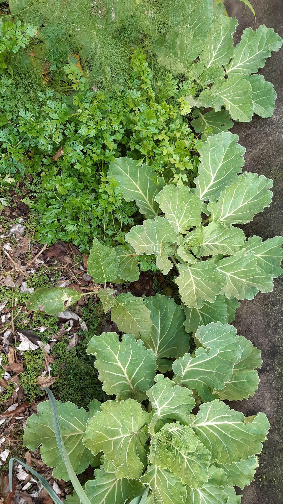
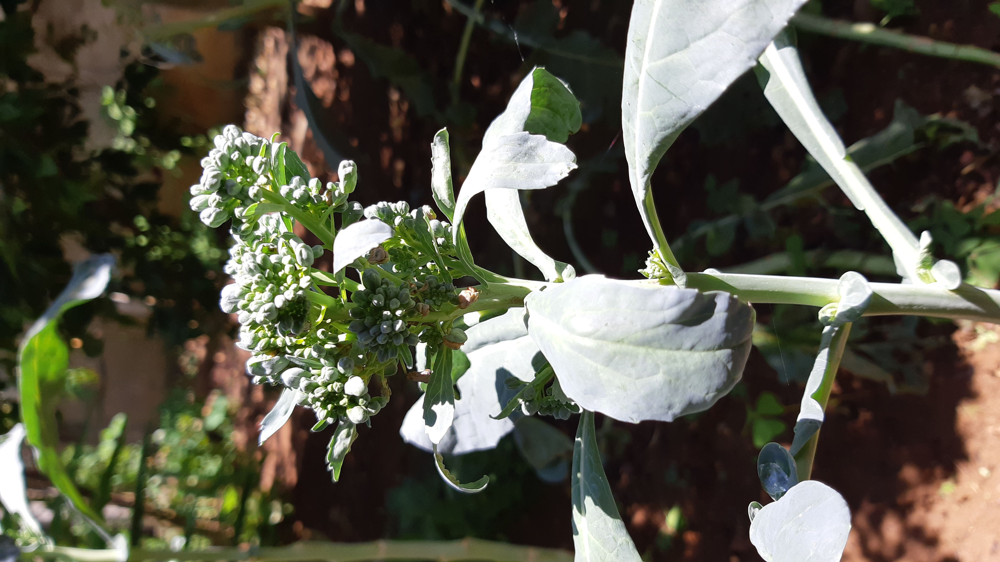

Benefícios de alimentos
produzidos em hortas caseiras...
Couve
"Contém vitaminas A, B, C e minerais como enxofre e fibras. É importante observar sempre o aspecto de alimento fresco.
Pode ser consumida crua ou cozida, no preparo de sopas, sucos e farofa. Existem mais de cem variedades de couve, dentre elas: couve-de-bruxelas, couve-flor, couve-nabo e couve-repolho.
Seus talos também podem ser consumidos. A couve combate a asma e a bronquite, já que o enxofre atua como expectorante. As fibras protegem a mucosa gástrica, diminuindo a acidez do estômago."
Veja mais sobre "Couve " em: Couve
Brócolis
"Contém carotenoides, fibras, compostos fenólicos, selênio, vitaminas, minerais (cálcio, ferro, potássio, fósforo e enxofre) e glicosinolatos. E propriedades importantes como : efeito anticarcinogênico
e antioxidante. Estudos têm mostrado que o brócolis ajuda no tratamento de infecção por Helicobacter pylori, bactéria relacionada com a gastrite, e é capaz de ajudar na redução de níveis de glicose no sangue."
Muitos componentes, como vitaminas, são sensíveis ao calor e podem perder-se durante o cozimento. Um longo tempo de cozimento não é recomendado, sendo o cozimento no vapor mais aconselhado.
Veja mais sobre "Brócolis" em: Brócolis
Berinjela